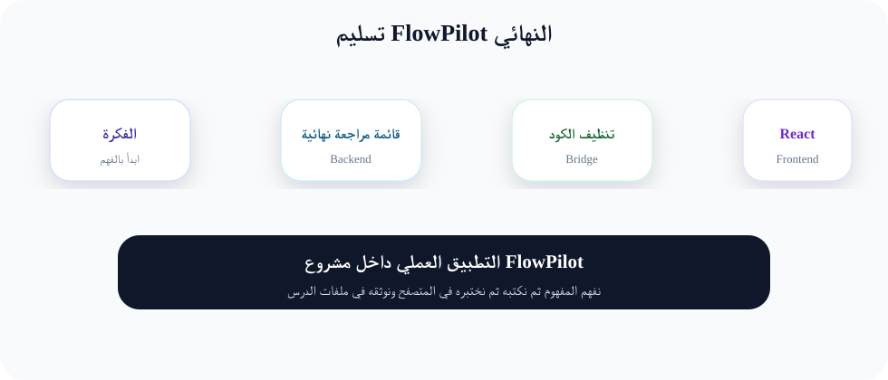
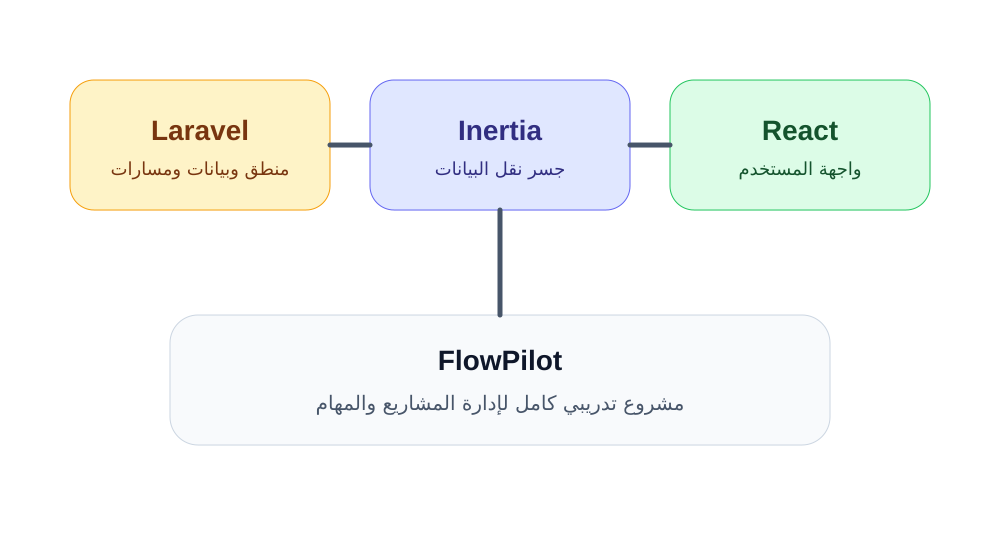

تسليم FlowPilot النهائي
نراجع المشروع كاملاً ونبني قائمة فحص نهائية للتسليم الاحترافي.
لغة الشرح
موجهة للطلاب وليست تعليمات للمدرب
أسلوب الدرس
تعريف واضح ثم أهمية ثم تطبيق
النتيجة
نسخة نهائية منظمة وقابلة للعرض من FlowPilot.
تمهيد الدرس للطلاب
في هذا الدرس سنتعلم تسليم FlowPilot النهائي بطريقة تناسب الطالب المبتدئ. سنبدأ بالسؤال البسيط: ما الفكرة؟ ثم ننتقل إلى سؤال أهم: لماذا نحتاجها داخل مشروع حقيقي؟ وبعد ذلك نطبقها داخل مشروع الدورة FlowPilot.
هذا الشرح ليس تعليمات للمدرب، بل نص تعليمي جاهز للعرض على الطلاب. يمكن قراءة الفقرات كما هي داخل القاعة، ويمكن للطالب الرجوع إليها لاحقاً لفهم المفهوم وتنفيذ الواجب.
الشرح النظري المنظم
ما هو تسليم FlowPilot النهائي؟
التسليم النهائي يعني مراجعة المشروع كاملاً والتأكد من أن الميزات تعمل، والواجهة منظمة، والتوثيق موجود، ولا توجد أخطاء واضحة.
لماذا نحتاج هذا المفهوم؟
المرحلة الأخيرة ليست كتابة كود جديد فقط، بل التأكد من جودة ما تم بناؤه خلال شهرين. التسليم الجيد يعكس احترافية الطالب والدورة.
كيف يعمل عملياً؟
سنستخدم checklist نهائية تشمل التشغيل، قاعدة البيانات، الصلاحيات، الواجهة، الاختبارات، النشر، والتوثيق.
ما علاقته بالدروس القادمة؟
هذا الدرس لا يقف وحده. نتيجته ستستخدم في الدروس التالية حتى يبني الطالب FlowPilot خطوة بعد خطوة. عندما يفهم الطالب تسليم FlowPilot النهائي الآن، سيستطيع لاحقاً قراءة الكود وتعديل الصفحات وحل الأخطاء بثقة أكبر.
مثال مبسط لتسهيل الفهم
التسليم يشبه تسليم شقة جاهزة: لا يكفي أن تكون الجدران موجودة، بل يجب فحص الكهرباء والماء والأبواب والنظافة.
بهذا المثال يصبح المفهوم قريباً من الحياة اليومية. وبعد أن يفهم الطالب التشبيه، نعود إلى الكود لنرى كيف تظهر الفكرة نفسها داخل التطبيق.
كيف يظهر هذا المفهوم داخل مشروع FlowPilot؟
FlowPilot يصبح مشروع التخرج العملي للدورة، ويستطيع الطالب عرضه كدليل على مهاراته.
قبل الدرس
يعرف الطالب الفكرة بشكل عام أو يسمع المصطلح لأول مرة.
أثناء الدرس
يرى المفهوم داخل ملفات FlowPilot وليس كشرح منفصل.
بعد الدرس
يمتلك نتيجة عملية يمكن البناء عليها في الدرس التالي.
الشرح العملي خطوة بخطوة
التطبيق العملي في هذا الدرس يتم بهدوء وبخطوات قصيرة. كل خطوة لها سبب واضح ونتيجة يمكن ملاحظتها. لا ننتقل إلى الخطوة التالية قبل أن يعرف الطالب ماذا تغير ولماذا تغير.
يبدأ الطالب بفهم تسليم FlowPilot النهائي من خلال الشرح النظري والمثال، لأن الهدف ليس نسخ الكود بسرعة بل فهم سبب كل خطوة.
نوضح للطالب هل سيعمل داخل routes أو Controllers أو resources/js أو database. معرفة المكان الصحيح تقلل التشتت وتمنع وضع الكود في ملف غير مناسب.
نطبق جزءاً واحداً فقط في كل مرة، ثم نربطه بنتيجة مرئية. هذه الطريقة تناسب المبتدئين لأنها تجعل الخطأ أسهل في الاكتشاف.
بعد التطبيق يشغل الطالب الأوامر المناسبة ويفتح المتصفح أو قاعدة البيانات ليتأكد أن FlowPilot تغير فعلاً.
يكتب الطالب جملة قصيرة تلخص ما تعلمه. هذه العادة تساعده على تذكر المفهوم عند العودة للمشروع لاحقاً.
مثال كود مشروح للطلاب
الكود التالي ليس للحفظ، بل للقراءة والفهم. المطلوب من الطالب أن يلاحظ الكلمات المهمة، ثم يربطها بما شاهده في الشرح النظري والتطبيق العملي.
php artisan test npm run build php artisan migrate:fresh --seed php artisan route:list
مخططات وصور توضيحية
تساعد هذه الرسومات الطالب على رؤية العلاقة بين Laravel وInertia وReact وبين الجزء الذي يتم بناؤه داخل FlowPilot. يمكن استخدامها في العرض داخل القاعة أو كمراجعة بعد الدرس.

مخطط يوضح مسار التعلم في هذا الدرس

صورة توضح علاقة المفهوم بمشروع FlowPilot
ماذا يجب أن يفهم الطالب في نهاية الدرس؟
- أن يشرح معنى تسليم FlowPilot النهائي بلغته الخاصة.
- أن يعرف لماذا نستخدم هذا الجزء داخل FlowPilot.
- أن يقرأ المثال البرمجي ويفهم وظيفة كل سطر أساسي فيه.
- أن يطبق الواجب ويجيب على الكويز للتأكد من الفهم.